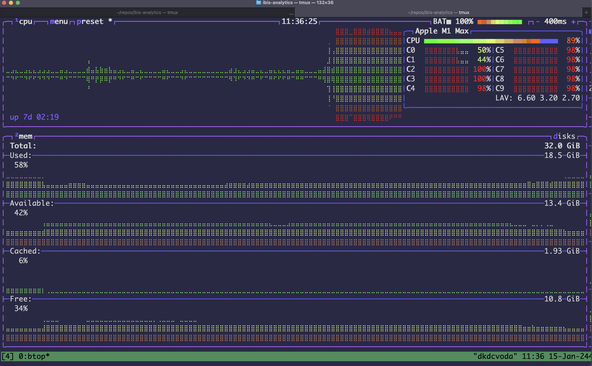
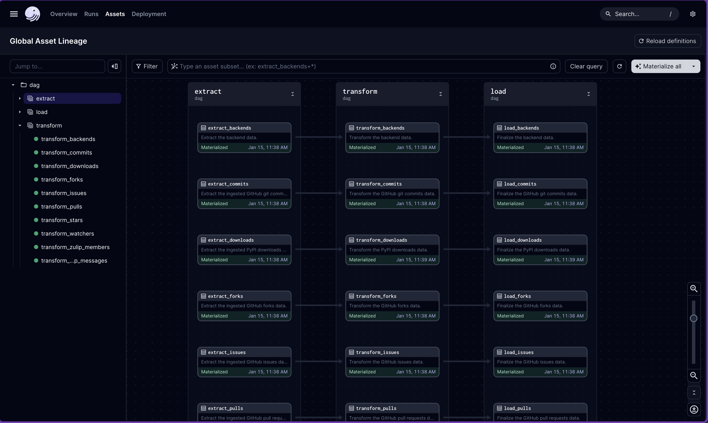
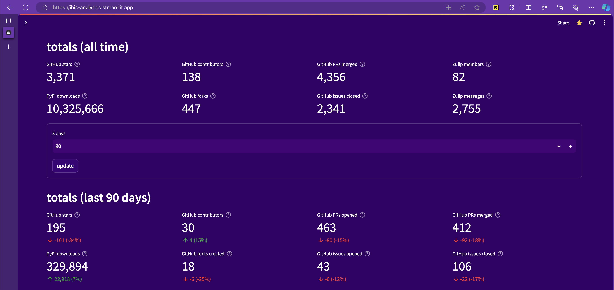
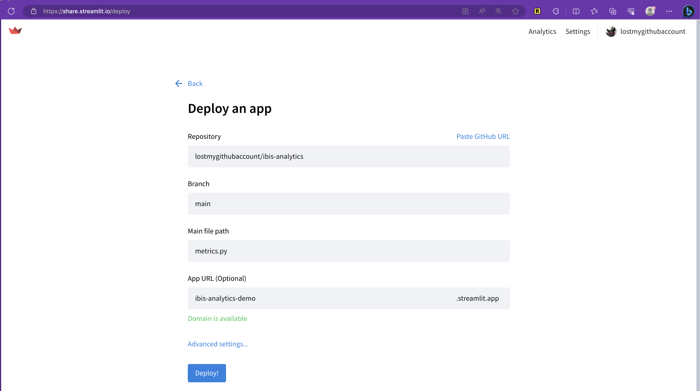

Introduction
As a Python data user, I’ve wanted a more modular, composable, and scalable ecosystem. I think it’s here. Wes McKinney released pandas c. 2009 to bring dataframes into Python and it became one of the most used software packages. It was built when small data was smaller and has some downsides Wes wrote about in his “Apache Arrow and the ‘10 things I hate about pandas’” blog post. Wes created Ibis (and co-created Apache Arrow) to address these issues and more with a different approach than any other Python dataframe library by decoupling the dataframe API from the backend implementation. This allows Ibis to support 20+ backends today including pandas, DuckDB, Polars, Postgres, BigQuery, Snowflake, PySpark, and over a dozen more.
I’ve experienced many pains of the ecosystem myself. I’ve downloaded a 1 GB CSV from a database GUI and used pandas to munge it because I couldn’t figure it out in SQL. When building larger ML demos that included data preprocessing on GBs, I hit OOM errors and learned about how much data expands in memory. Schema inference issues and file read speeds led me understand why storing data in compressed Parquet files might be better for my use cases. I learned about partitioning strategies and the joy of subtle differences and incompatibilities across data systems. I started using PySpark and Dask to overcome hurdles. I slowly learned about databases. Fortunately while I’ve been learning, others (including many Ibis contributors) have been building a modern, open-source Python data ecosystem! Now I can use what they’ve built to create a modern analytics application.
In this blog, we’ll look at how to build an end-to-end analytics project using Ibis as the frontend for data in Python. Ibis plays a key role, but is only one component in any real data project.
We’ll combine a variety of open-source tools and freemium services including:
- Ibis (dataframe library)
- DuckDB (database and query engine)
- Dagster (orchestration library)
- Plotly (visualization library)
- Streamlit (dashboard library)
- justfile (command runner)
- TOML (configuration)
- GitHub (source control, CI/CD)
- Azure VM (self-hosted runner)
- GitHub web APIs (source data)
- Google BigQuery (source data)
- Zulip (source data)
- MotherDuck (cloud service for DuckDB)
- Streamlit Community Cloud (cloud service for Streamlit)
to build an open-source, modular, composable, scalable, automated, hybrid-cloud, end-to-end analytics project processing a few million rows of data that provides real business value.
What’s the business value?
Today, Ibis is a thriving open-source project primarily backed by Voltron Data with contributors at Google, Claypot AI, Singlestore, Exasol, RisingWave, Starburst Data, and anyone who submits a PR and makes a commit. It aims to be a standard frontend for data in Python that scales to your backend. To understand the project’s health, we want to track some key adoption metrics. There was already a dashboard internally at Voltron Data, but it was written in R and I don’t know R. I do know Ibis and a few other OSS tools, and saw this as a cool opportunity to try out a few more while showcasing Ibis in a real-world project.
Let’s get started!
Finished product
The final result is a MotherDuck database powering a dashboard deployed to Streamlit Community Cloud.
Since writing this blog, I’ve added documentation metrics. This is ongoing and that page may be broken.
Look out for a follow up post on how new metrics are added to the dashboard!
While I consider this “production” it does go down occasionally, usually because of a stale connection to MotherDuck. There are screenshots below in case that happens while you’re reading this, or you can reproduce it locally (an exercise for the reader).
The dashboard can be viewed as a Streamlit app in your browser or embedded in this page below.
Architecture
The source of truth for the project’s architecture is the repository of code. A point-in-time description and snapshots of the code are below.
Goals
I had the following goals in mind:
- Modular: while this project uses Dagster, it should be easily swappable for other orchestration tools like Airflow or Prefect or Kedro. While this project uses DuckDB, it should be easily swappable for Polars or Clickhouse or any other engine. While this project uses Streamlit, it should be swappable for Quarto dashboards…
- Composable: the project should be easy to understand and extend. It should be easy to add new data sources, new data transformations, new metrics, and new visualizations.
- Automated: the project should be easy to run locally and in production. It should be easy to run the entire pipeline or just a single step. It should be easy to run the pipeline on a schedule or on a pull request.
- Iterative: the project should be easy to iterate on. It should be easy to explore the data, transform it, and visualize it. It should be easy to switch between local and production data sources.
Our open-source tools and freemium services allow us to accomplish these goals.
Overview
The architecture consists of Python code. Steps in the overall data pipeline are captured in a justfile, which is a Makefile-like command runner. This allows us to run the pipeline locally or in automated CI/CD workflows. The data ingestion is a Python script that makes raw request calls to GitHub web APIs, uses the Zulip Python client for Zulip web APIs, and Ibis + SQL to extract PyPI data from a public Google BigQuery project.
The data is then extracted from its ingested file formats (JSON and Parquet), transformed with Ibis using the default DuckDB backend, and loaded into final DuckDB database files. Further postprocessing is done to combine these into a single DuckDB database file for convenience, though this step isn’t necessary. The tables are then copied using Ibis to connect to MotherDuck, a serverless cloud service for DuckDB. This allows us to use MotherDuck’s servers to access the production data from anywhere, including my laptop and a Streamlit Community Cloud server. The dashboard deployed there updates automatically when the data is updated. Finally, we can run some tests by executing the dashboard code.
For the most part, you just need a Python environment with pip installs including Ibis and a few other packages.
Python pip install requirements
# python
ruff
python-dotenv
# web clients
zulip
PyGithub # unused for now
# data
duckdb>=0.9.0
ibis-framework[duckdb,bigquery,deltalake]
# ML
ibisml # unused for now
# viz
plotly
streamlit
# ops
dagster
dagster-webserverVarious environment variables set to access the data sources and cloud services are stored in a .env file and set in the respective cloud services (GitHub Actions secrets and Streamlit Community Cloud secrets).
Configuration
We use a config.toml file to configure the project. This allows easily switching out the database (i.e. changing over to local for development) and adding new data sources. Most of the ingested data is currently unused, but this makes it easy in the future to set up additional dashboards for other Ibis projects as they grow and need to be tracked.
[app]
#database="data/app.ddb"
database="md:ibis_analytics"
[eda]
database="md:ibis_analytics"
#database="data/data.ddb"
[ingest.pypi]
packages = [
"ibis-framework",
"ibis-examples",
"ibis-substrait",
"ibisml",
"ibis-birdbrain",
]
[ingest.github]
repos = [
"ibis-project/ibis",
"ibis-project/ibis-examples",
"ibis-project/ibis-substrait",
"ibis-project/ibisml",
"ibis-project/ibis-birdbrain",
]
endpoints = [
"repo",
"stargazers",
"subscribers",
"commits",
"releases",
"forks",
"issues",
"contributors",
]
[ingest.zulip]
url = "https://ibis-project.zulipchat.com"Automation
Anything run frequently is put in a justfile. This makes it easy to run the same code locally or in a GitHub Action.
Show the justfile of project commands
# justfile
# load environment variables
set dotenv-load
# variables
module := "dag"
# aliases
alias fmt:=format
alias etl:=run
alias open:=open-dash
alias dag-open:=open-dag
alias preview:=app
# format
format:
@ruff format .
# smoke-test
smoke-test:
@ruff format --check .
# list justfile recipes
default:
just --list
# setup
setup:
@pip install --upgrade -r requirements.txt
# eda
eda:
@ipython -i eda.py
# ingest
ingest:
@python {{module}}/ingest.py
# run
run:
@dagster job execute -j all_assets -m {{module}}
# postprocess
postprocess:
@python {{module}}/postprocess.py
# deploy
deploy:
@python {{module}}/deploy.py
# test
test:
@python metrics.py
@python pages/0_github.py
@python pages/1_pypi.py
@python pages/2_zulip.py
@python pages/3_about.py
# dag
dag:
@dagster dev -m {{module}}
# streamlit stuff
app:
@streamlit run metrics.py
# clean
clean:
@rm -r *.ddb* || true
@rm -r data/system || true
@rm -r data/backup || true
@rm data/backup.ddb || true
# open dag
open-dag:
@open http://localhost:3000/asset-groups
# open dash
open-dash:
@open https://ibis-analytics.streamlit.app
# cicd
cicd:
@gh workflow run cicd.yamlThen our CI/CD workflow in cicd.yaml is just:
name: cicd
on:
workflow_dispatch:
schedule:
- cron: "0 0/3 * * *"
pull_request:
paths:
- '.github/workflows/cicd.yaml'
- 'requirements.txt'
- '**.py'
- 'justfile'
jobs:
ingest-etl-postprocess-deploy-test:
runs-on: self-hosted
steps:
- uses: actions/checkout@v3
- uses: google-github-actions/auth@v1
with:
credentials_json: ${{ secrets.GCLOUD_JSON }}
- uses: extractions/setup-just@v1
- uses: actions/setup-python@v4
with:
python-version: 3.11
- name: install requirements
run: just setup
- name: ingest
run: just ingest
env:
BQ_PROJECT_ID: voltrondata-demo
GITHUB_TOKEN: ${{ secrets.GITHUB_TOKEN }}
ZULIP_KEY: ${{ secrets.ZULIP_KEY }}
- name: run ETL job
run: just run
- name: postprocess
run: just postprocess
- name: deploy to prod
run: just deploy
env:
MOTHERDUCK_TOKEN: ${{ secrets.MOTHERDUCK_TOKEN }}
- name: test
run: just test
env:
MOTHERDUCK_TOKEN: ${{ secrets.MOTHERDUCK_TOKEN }}This will run the entire pipeline on a schedule, on a pull request, or manually. Everything is automated!
Data ingestion
After you just ingest data you end up with:
data/ingest/
├── github/
│ └── ibis-project/
│ ├── ibis/
│ │ ├── commits.000001.json
│ │ ├── commits.000002.json
│ │ ├── ...
│ │ ├── forks.000001.json
│ │ ├── forks.000002.json
│ │ ├── ...
│ │ ├── issues.000001.json
│ │ ├── issues.000002.json
│ │ ├── ...
│ │ ├── pullRequests.000001.json
│ │ ├── pullRequests.000054.json
│ │ ├── ...
│ │ ├── stargazers.000001.json
│ │ ├── stargazers.000002.json
│ │ ├── ...
│ │ └── watchers.000001.json
│ ├── ibis-birdbrain/
│ │ ├── commits.000001.json
│ │ ├── forks.000001.json
│ │ ├── issues.000001.json
│ │ ├── pullRequests.000001.json
│ │ ├── stargazers.000001.json
│ │ └── watchers.000001.json
│ ├── ibis-examples/
│ │ ├── commits.000001.json
│ │ ├── forks.000001.json
│ │ ├── issues.000001.json
│ │ ├── pullRequests.000001.json
│ │ ├── stargazers.000001.json
│ │ └── watchers.000001.json
│ ├── ibis-substrait/
│ │ ├── commits.000001.json
│ │ ├── commits.000002.json
│ │ ├── ...
│ │ ├── forks.000001.json
│ │ ├── issues.000001.json
│ │ ├── pullRequests.000001.json
│ │ ├── pullRequests.000002.json
│ │ ├── ...
│ │ ├── stargazers.000001.json
│ │ └── watchers.000001.json
│ └── ibisml/
│ ├── commits.000001.json
│ ├── forks.000001.json
│ ├── issues.000001.json
│ ├── pullRequests.000001.json
│ ├── stargazers.000001.json
│ └── watchers.000001.json
├── pypi/
│ ├── ibis-birdbrain/
│ │ └── file_downloads.parquet
│ ├── ibis-examples/
│ │ └── file_downloads.parquet
│ ├── ibis-framework/
│ │ └── file_downloads.parquet
│ ├── ibis-substrait/
│ │ └── file_downloads.parquet
│ └── ibisml/
│ └── file_downloads.parquet
└── zulip/
├── members.json
└── messages.jsonThis runs a Python data ingestion script and takes a few minutes. It’s not the best code, but it works!
Show the data ingestion script
import os
import ibis
import toml
import json
import zulip
import inspect
import requests
import logging as log
from ibis import _
from dotenv import load_dotenv
from datetime import datetime, timedelta, date
from graphql_queries import (
issues_query,
pulls_query,
forks_query,
commits_query,
stargazers_query,
watchers_query,
)
# main function
def main():
# load environment variables
load_dotenv()
# ingest data
ingest_zulip()
ingest_pypi()
ingest_gh()
# ingest_ci() # TODO: fix permissions, add assets
# helper functions
def write_json(data, filename):
# write the data to a file
with open(filename, "w") as f:
json.dump(data, f, indent=4)
# ingest functions
def ingest_gh():
"""
Ingest the GitHub data.
"""
# configure logger
log.basicConfig(level=log.INFO)
# constants
GRAPH_URL = "https://api.github.com/graphql"
# load environment variables
GH_TOKEN = os.getenv("GITHUB_TOKEN")
# load config
config = toml.load("config.toml")["ingest"]["github"]
log.info(f"Using repos: {config['repos']}")
# construct header
headers = {
"Authorization": f"Bearer {GH_TOKEN}",
}
# map queries
queries = {
"issues": issues_query,
"pullRequests": pulls_query,
"commits": commits_query,
"forks": forks_query,
"stargazers": stargazers_query,
"watchers": watchers_query,
}
# define helper functions
def get_filename(query_name, page):
# return the filename
return f"{query_name}.{page:06}.json"
def get_next_link(link_header):
# if there is no link header, return None
if link_header is None:
return None
# split the link header into links
links = link_header.split(", ")
for link in links:
# split the link into segments
segments = link.split("; ")
# if there are two segments and the second segment is rel="next"
if len(segments) == 2 and segments[1] == 'rel="next"':
# remove the < and > around the link
return segments[0].strip("<>")
# if there is no next link, return None
return None
def fetch_data(client, owner, repo, query_name, query, output_dir, num_items=100):
# initialize variables
variables = {
"owner": owner,
"repo": repo,
"num_items": num_items,
"before": "null",
}
# initialize page number
page = 1
# while True
while True:
# request data
try:
log.info(f"\t\tFetching page {page}...")
resp = requests.post(
GRAPH_URL,
headers=headers,
json={"query": query, "variables": variables},
)
json_data = resp.json()
log.info(f"\t\t\tStatus code: {resp.status_code}")
# log.info(f"\t\t\tResponse: {resp.text}")
# log.info(f"\t\t\tJSON: {json_data}")
if resp.status_code != 200:
log.error(
f"\t\tFailed to fetch data for {owner}/{repo}; url={GRAPH_URL}\n\n {resp.status_code}\n {resp.text}"
)
return
# extract data
if query_name == "commits":
data = json_data["data"]["repository"]["defaultBranchRef"][
"target"
]["history"]["edges"]
# get the next link
cursor = json_data["data"]["repository"]["defaultBranchRef"][
"target"
]["history"]["pageInfo"]["endCursor"]
has_next_page = json_data["data"]["repository"]["defaultBranchRef"][
"target"
]["history"]["pageInfo"]["hasNextPage"]
else:
data = json_data["data"]["repository"][query_name]["edges"]
cursor = json_data["data"]["repository"][query_name]["pageInfo"][
"endCursor"
]
has_next_page = json_data["data"]["repository"][query_name][
"pageInfo"
]["hasNextPage"]
# save json to a file
filename = get_filename(query_name, page)
output_path = os.path.join(output_dir, filename)
log.info(f"\t\tWriting data to {output_path}")
write_json(data, output_path)
variables["cursor"] = f"{cursor}"
print(f"has_next_page={has_next_page}")
print(f"cursor={cursor}")
if not has_next_page:
break
# increment page number
page += 1
except:
# print error if response
log.error(f"\t\tFailed to fetch data for {owner}/{repo}")
try:
log.error(f"\t\t\tResponse: {resp.text}")
except:
pass
break
# create a requests session
with requests.Session() as client:
for repo in config["repos"]:
log.info(f"Fetching data for {repo}...")
for query in queries:
owner, repo_name = repo.split("/")
output_dir = os.path.join(
"data",
"ingest",
"github",
owner,
repo_name,
)
os.makedirs(output_dir, exist_ok=True)
log.info(f"\tFetching data for {owner}/{repo_name} {query}...")
fetch_data(client, owner, repo_name, query, queries[query], output_dir)
def ingest_pypi():
"""
Ingest the PyPI data.
"""
# constants
# set DEFAULT_BACKFILL to the number of days
# since July 19th, 2015 until today
DEFAULT_BACKFILL = (datetime.now() - datetime(2015, 7, 19)).days
BIGQUERY_DATASET = "bigquery-public-data.pypi.file_downloads"
# configure logger
log.basicConfig(level=log.INFO)
# load environment variables
project_id = os.getenv("BQ_PROJECT_ID")
log.info(f"Project ID: {project_id}")
# load config
config = toml.load("config.toml")["ingest"]["pypi"]
log.info(f"Packages: {config['packages']}")
# configure lookback window
backfill = config["backfill"] if "backfill" in config else DEFAULT_BACKFILL
log.info(f"Backfill: {backfill}")
# for each package
for package in config["packages"]:
log.info(f"Package: {package}")
# create output directory
output_dir = os.path.join("data", "ingest", "pypi", package)
os.makedirs(output_dir, exist_ok=True)
# construct query
query = f"""
SELECT *
FROM `{BIGQUERY_DATASET}`
WHERE file.project = '{package}'
AND DATE(timestamp)
BETWEEN DATE_SUB(CURRENT_DATE(), INTERVAL {backfill} DAY)
AND CURRENT_DATE()
""".strip()
query = inspect.cleandoc(query)
# connect to bigquery and execute query
con = ibis.connect(f"bigquery://{project_id}")
log.info(f"Executing query:\n{query}")
t = con.sql(query)
# write to parquet
filename = f"file_downloads.parquet"
output_path = os.path.join(output_dir, filename)
log.info(f"Writing to: {output_path}")
t.to_parquet(output_path)
def ingest_ci():
"""
Ingest the CI data.
"""
# constants
# set DEFAULT_BACKFILL to the number of days
# since July 19th, 2015 until today
DEFAULT_BACKFILL = (datetime.now() - datetime(2015, 7, 19)).days
# configure logger
log.basicConfig(level=log.INFO)
# load environment variables
project_id = os.getenv("BQ_PROJECT_ID")
log.info(f"Project ID: {project_id}")
# load config
config = toml.load("config.toml")["ingest"]["ci"]
# configure lookback window
backfill = config["backfill"] if "backfill" in config else DEFAULT_BACKFILL
log.info(f"Backfill: {backfill}")
# make sure the data directory exists
os.makedirs("data/ingest/ci/ibis", exist_ok=True)
# connect to databases
con = ibis.connect("duckdb://data/ingest/ci/ibis/raw.ddb")
bq_con = ibis.connect(f"bigquery://{project_id}/workflows")
# copy over tables
for table in bq_con.list_tables():
log.info(f"Writing table: {table}")
con.create_table(table, bq_con.table(table).to_pyarrow(), overwrite=True)
def ingest_zulip():
"""Ingest the Zulip data."""
# constants
email = "cody@dkdc.dev"
# load config
config = toml.load("config.toml")["ingest"]["zulip"]
log.info(f"Using url: {config['url']}")
# configure logger
log.basicConfig(level=log.INFO)
# load environment variables
zulip_key = os.getenv("ZULIP_KEY")
# create the client
client = zulip.Client(email=email, site=config["url"], api_key=zulip_key)
# get the users
r = client.get_members()
if r["result"] != "success":
log.error(f"Failed to get users: {r}")
else:
members = r["members"]
# make sure the directory exists
os.makedirs("data/ingest/zulip", exist_ok=True)
# write the users to a file
filename = "members.json"
output_path = os.path.join("data", "ingest", "zulip", filename)
log.info(f"Writing members to: {output_path}")
write_json(members, output_path)
# get the messages
all_messages = []
r = client.get_messages(
{"anchor": "newest", "num_before": 100, "num_after": 0, "type": "stream"}
)
if r["result"] != "success":
log.error(f"Failed to get messages: {r}")
else:
messages = r["messages"]
all_messages.extend(messages)
while len(messages) > 1:
r = client.get_messages(
{
"anchor": messages[0]["id"],
"num_before": 100,
"num_after": 0,
"type": "stream",
}
)
if r["result"] != "success":
log.error(f"Failed to get messages: {r}")
break
else:
messages = r["messages"]
all_messages.extend(messages)
# make sure the directory exists
os.makedirs("data/ingest/zulip", exist_ok=True)
# write the messages to a file
filename = "messages.json"
output_path = os.path.join("data", "ingest", "zulip", filename)
log.info(f"Writing messages to: {output_path}")
write_json(all_messages, output_path)
if __name__ == "__main__":
main()Python’s requests module is used for web API calls to GitHub’s REST and GraphQL APIs. The Zulip Python client is used for extracting data from there. Both of these sets of data are saved as JSON files, which we can read in with the Ibis DuckDB or other local backends.
The PyPI data is extracted using Ibis from BigQuery using raw SQL strings and saved as Parquet files. This is over ten million rows of data for the main Ibis package, so it takes a few minutes to run. We can also read in the Parquet files with Ibis.
Extract, transform, load (ETL)
It’s fun to just run and watch my system usage spike as DuckDB goes brrrrr:

This executes the entire Dagster DAG, processing over 10 million rows of data in under a minute on my laptop.
Directed acyclic graph (DAG) and input/output management
We use Dagster to manage the ETL pipeline. I chose Dagster to try something new and I like its software-defined assets. Relationships between them in the DAG don’t need to be explicitly defined, and rather are inferred from function names and input parameters. Outside of the input/output management code (shown below), there is almost no Dagster-specific code other than some Python decorators. The rest is just Python code, using Ibis for data processing.
We can just dag and view the DAG in a web browser with the Dagster GUI:

Since this pipeline is so simple, there are no joins and thus no assets with multiple inputs. Of course, joins and other more complex operations are possible with Ibis.
The DAG is defined in the assets directory, separated into the three conventional ETL stages:
dag/assets/
├── __init__.py
├── extract/
│ ├── __init__.py
│ ├── backends.py
│ ├── github.py
│ ├── pypi.py
│ └── zulip.py
├── load/
│ ├── __init__.py
│ ├── backends.py
│ ├── github.py
│ ├── pypi.py
│ └── zulip.py
└── transform/
├── __init__.py
├── backends.py
├── github.py
├── pypi.py
└── zulip.pyIbis makes data input/output management easy with file formats or tables in backends. I define some table IO managers and use the DuckDBIOManager as the default for the project.
Show the input/output management code
import os
import ibis
from dagster import ConfigurableIOManager
class ParquetIOManager(ConfigurableIOManager):
"""
Manage tables as parquet files.
"""
extension: str = "parquet"
base_path: str = os.path.join("data", "system", "parquet")
def handle_output(self, context, obj):
dirname, filename = self._get_paths(context)
os.makedirs(dirname, exist_ok=True)
output_path = os.path.join(dirname, filename)
obj.to_parquet(output_path)
def load_input(self, context):
dirname, filename = self._get_paths(context)
input_path = os.path.join(dirname, filename)
return ibis.read_parquet(input_path)
def _get_paths(self, context):
group_name = context.step_context.job_def.asset_layer.assets_def_for_asset(
context.asset_key
).group_names_by_key[context.asset_key]
dirname = os.path.join(self.base_path, group_name, *context.asset_key.path[:-1])
filename = f"{context.asset_key.path[-1]}.{self.extension}"
return dirname, filename
class DeltaIOManager(ConfigurableIOManager):
"""
Manage tables as delta tables.
"""
extension: str = "delta"
base_path: str = os.path.join("data", "system", "delta")
delta_write_mode: str = "overwrite"
def handle_output(self, context, obj):
dirname, filename = self._get_paths(context)
os.makedirs(dirname, exist_ok=True)
output_path = os.path.join(dirname, filename)
obj.to_delta(output_path, mode=self.delta_write_mode)
def load_input(self, context):
dirname, filename = self._get_paths(context)
input_path = os.path.join(dirname, filename)
return ibis.read_delta(input_path)
def _get_paths(self, context):
group_name = context.step_context.job_def.asset_layer.assets_def_for_asset(
context.asset_key
).group_names_by_key[context.asset_key]
dirname = os.path.join(self.base_path, *context.asset_key.path)
filename = f"{context.asset_key.path[-1]}.{self.extension}"
return dirname, filename
class DuckDBIOManager(ConfigurableIOManager):
"""
Manage tables as duckdb files.
"""
extension: str = "ddb"
base_path: str = os.path.join("data", "system", "duckdb")
def handle_output(self, context, obj):
dirname, filename = self._get_paths(context)
os.makedirs(dirname, exist_ok=True)
output_path = os.path.join(dirname, filename)
con = ibis.duckdb.connect(output_path)
con.create_table(context.asset_key.path[-1], obj.to_pyarrow(), overwrite=True)
def load_input(self, context):
dirname, filename = self._get_paths(context)
input_path = os.path.join(dirname, filename)
con = ibis.duckdb.connect(input_path)
return con.table(context.asset_key.path[-1])
def _get_paths(self, context):
group_name = context.step_context.job_def.asset_layer.assets_def_for_asset(
context.asset_key
).group_names_by_key[context.asset_key]
dirname = os.path.join(self.base_path, *context.asset_key.path)
filename = f"{context.asset_key.path[-1]}.{self.extension}"
return dirname, filenameWith this setup, we can swap file formats or backends for storage as desired. After executing the DAG, the following data is written to our local filesystem:
data/system/
└── duckdb/
├── extract_backends/
│ └── extract_backends.ddb
├── extract_commits/
│ └── extract_commits.ddb
├── extract_downloads/
│ └── extract_downloads.ddb
├── extract_forks/
│ └── extract_forks.ddb
├── extract_issues/
│ └── extract_issues.ddb
├── extract_pulls/
│ └── extract_pulls.ddb
├── extract_stars/
│ └── extract_stars.ddb
├── extract_watchers/
│ └── extract_watchers.ddb
├── extract_zulip_members/
│ └── extract_zulip_members.ddb
├── extract_zulip_messages/
│ └── extract_zulip_messages.ddb
├── load_backends/
│ └── load_backends.ddb
├── load_commits/
│ └── load_commits.ddb
├── load_downloads/
│ └── load_downloads.ddb
├── load_forks/
│ └── load_forks.ddb
├── load_issues/
│ └── load_issues.ddb
├── load_pulls/
│ └── load_pulls.ddb
├── load_stars/
│ └── load_stars.ddb
├── load_watchers/
│ └── load_watchers.ddb
├── load_zulip_members/
│ └── load_zulip_members.ddb
├── load_zulip_messages/
│ └── load_zulip_messages.ddb
├── transform_backends/
│ └── transform_backends.ddb
├── transform_commits/
│ └── transform_commits.ddb
├── transform_downloads/
│ └── transform_downloads.ddb
├── transform_forks/
│ └── transform_forks.ddb
├── transform_issues/
│ └── transform_issues.ddb
├── transform_pulls/
│ └── transform_pulls.ddb
├── transform_stars/
│ └── transform_stars.ddb
├── transform_watchers/
│ └── transform_watchers.ddb
├── transform_zulip_members/
│ └── transform_zulip_members.ddb
└── transform_zulip_messages/
└── transform_zulip_messages.ddbWe can change the configuration in the project to change these to Parquet or Delta Lake tables.
Common Python functions are defined in dag/functions.py, including a fancy user-defined function (UDF) for regex matching.
A LLM wrote the entire clean_version function, I’m never writing a regex again.
import re
import ibis
import datetime
import ibis.selectors as s
# udfs
@ibis.udf.scalar.python
def clean_version(version: str, patch: bool = True) -> str:
pattern = r"(\d+\.\d+\.\d+)" if patch else r"(\d+\.\d+)"
match = re.search(pattern, version)
if match:
return match.group(1)
else:
return version
# functions
def now():
return datetime.datetime.now()
def today():
return now().date()
def clean_data(t):
t = t.rename("snake_case")
# t = t.mutate(s.across(s.of_type("timestamp"), lambda x: x.cast("timestamp('')")))
return t
def add_ingested_at(t, ingested_at=now()):
t = t.mutate(ingested_at=ingested_at).relocate("ingested_at")
return tThese are imported as from dag import functions as f by convention in the project.
Extract
We extract the data from the ingested files using Ibis with the default DuckDB backend.
The PyPI download data is in Parquet format:
import ibis
import dagster
from dag import functions as f
# assets
@dagster.asset
def extract_downloads():
"""
Extract the ingested PyPI downloads data.
"""
downloads = f.clean_data(
ibis.read_parquet("data/ingest/pypi/ibis-framework/*.parquet")
)
return downloadsWhile the GitHub (omitted for brevity) and Zulip data is in JSON format:
import ibis
import dagster
from dag import functions as f
# assets
@dagster.asset
def extract_zulip_members():
"""
Extract the ingested Zulip members data.
"""
members = f.clean_data(ibis.read_json("data/ingest/zulip/members.json"))
return members
@dagster.asset
def extract_zulip_messages():
"""
Extract the ingested Zulip messages data.
"""
messages = f.clean_data(ibis.read_json("data/ingest/zulip/messages.json"))
return messagesAs shown above, Dagster assets are configured to use the DuckDB table manager so the output of these functions are written to separate DuckDB database files for use downstream in the DAG.
Transform
With the data extracted, we can now transform it into its desired shape for downstream analytics. The most interesting transformation code is the PyPI data, shown here:
import ibis
import dagster
from dag import functions as f
# assets
@dagster.asset
def transform_downloads(extract_downloads):
"""
Transform the PyPI downloads data.
"""
downloads = f.clean_data(
extract_downloads.drop("project").unpack("file").unpack("details")
)
downloads = downloads.mutate(
major_minor_patch=f.clean_version(downloads["version"], patch=True),
major_minor=f.clean_version(downloads["version"], patch=False).cast("float"),
)
downloads = downloads.rename(
{
"version_raw": "version",
"version": "major_minor_patch",
}
)
downloads = (
downloads.group_by(
[
ibis._.timestamp.truncate("D").name("timestamp"),
ibis._.country_code,
ibis._.version,
ibis._.python,
ibis._.system["name"].name("system"),
]
)
.agg(
ibis._.count().name("downloads"),
)
.order_by(ibis._.timestamp.desc())
.mutate(
ibis._.downloads.sum()
.over(
rows=(0, None),
group_by=["country_code", "version", "python", "system"],
order_by=ibis._.timestamp.desc(),
)
.name("total_downloads")
)
.order_by(ibis._.timestamp.desc())
)
downloads = downloads.mutate(ibis._["python"].fillna("").name("python_full"))
downloads = downloads.mutate(
f.clean_version(downloads["python_full"], patch=False).name("python")
)
return downloadsLike the extract stage, the output of the transform stage is written to DuckDB database files for use downstream in the DAG.
Load
Honestly this step isn’t doing anything. It could use Ibis to directly upload the tables to MotherDuck, but as implemented these assets are just passing through the transformed data. This is a bit wasteful but allows for a three-stage DAG that conforms to the ETL paradigm.
import ibis
import dagster
from dag import functions as f
# assets
@dagster.asset
def load_downloads(transform_downloads):
"""
Finalize the PyPI downloads data.
"""
return transform_downloadsPostprocess
We run a postprocessing script to combine the separate data into a single DuckDB database. This step is not necessary, but it makes it easier to query the data locally from a single Ibis connection.
Show the postprocessing script
import os
import ibis
import fnmatch
import logging as log
from datetime import datetime, timedelta, date
## local imports
from dag import functions as f
def main():
postprocess()
def postprocess() -> None:
"""
Postprocess the data.
"""
# configure logger
log.basicConfig(
level=log.INFO,
)
# backup loaded data as Delta Lake tables and a DuckDB database
source_path = "data/system/duckdb"
target_path = "data/data.ddb"
os.makedirs(source_path, exist_ok=True)
target = ibis.duckdb.connect(target_path)
ingested_at = f.now()
for root, dirs, files in os.walk(source_path):
for file in files:
if fnmatch.fnmatch(file, "load_*.ddb"):
full_path = os.path.join(root, file)
con = ibis.duckdb.connect(full_path)
tablename = file.replace(".ddb", "")
table = con.table(tablename)
tablename = tablename.replace("load_", "")
log.info(f"Backing up {tablename} to {target_path}...")
target.create_table(tablename, table.to_pyarrow(), overwrite=True)
log.info(f"Backing up {tablename} to data/backup/{tablename}.delta...")
table.mutate(ingested_at=ingested_at).to_delta(
f"data/backup/{tablename}.delta", mode="overwrite"
)
if __name__ == "__main__":
main()This script also backs up the data as Delta Lake tables for good measure. After this, our data directory looks like:
data/
├── backup/
│ ├── backends.delta/
│ ├── commits.delta/
│ ├── downloads.delta/
│ ├── forks.delta/
│ ├── issues.delta/
│ ├── pulls.delta/
│ ├── stars.delta/
│ ├── watchers.delta/
│ ├── zulip_members.delta/
│ └── zulip_messages.delta/
├── data.ddb
├── ingest/
│ ├── github/
│ ├── pypi/
│ └── zulip/
└── system/
└── duckdb/Exploratory data analysis (EDA) and iteration
While EDA is not part of the production pipeline, it is an essential part of the development workflow. The config.toml shown earlier makes it easy to switch between the local data or the production MotherDuck database.
The eda.py script in the root of the repo imports useful stuff and connects to the database with Ibis:
import re
import os
import sys
import toml
import ibis
import requests
import logging as log
import plotly.io as pio
import ibis.selectors as s
import plotly.express as px
from rich import print
from dotenv import load_dotenv
from datetime import datetime, timedelta, date
## local imports
from dag import functions as f
from dag.assets import extract, load, transform
# configuration
## logger
log.basicConfig(level=log.INFO)
## config.toml
config = toml.load("config.toml")["eda"]
## load .env file
load_dotenv()
## ibis config
ibis.options.interactive = True
ibis.options.repr.interactive.max_rows = 20
ibis.options.repr.interactive.max_columns = None
# variables
NOW = datetime.now()
NOW_7 = NOW - timedelta(days=7)
NOW_30 = NOW - timedelta(days=30)
NOW_90 = NOW - timedelta(days=90)
NOW_180 = NOW - timedelta(days=180)
NOW_365 = NOW - timedelta(days=365)
NOW_10 = NOW - timedelta(days=3650)
# connect to database
database = config["database"]
log.info(f"database: {database}")
con = ibis.connect(f"duckdb://{database}")I can then just eda to open a quick iPython session and explore:
(venv) cody@voda ibis-analytics % just eda
Python 3.11.5 (main, Sep 14 2023, 13:17:51) [Clang 14.0.3 (clang-1403.0.22.14.1)]
Type 'copyright', 'credits' or 'license' for more information
IPython 8.20.0 -- An enhanced Interactive Python. Type '?' for help.
INFO:root:database: md:ibis_analytics
[ins] In [1]: con.list_tables()
Out[1]:
['backends',
'commits',
'downloads',
'forks',
'issues',
'pulls',
'stars',
'watchers',
'zulip_members',
'zulip_messages']
[ins] In [2]: t = con.table("stars")
[ins] In [3]: t.schema()
Out[3]:
ibis.Schema {
starred_at timestamp
id string
login string
name string
company string
created_at timestamp
updated_at timestamp
total_stars int64
}
[ins] In [4]: t = t.select("starred_at", "login", "company")
[ins] In [5]: t.filter(t.company.lower().contains("voltron"))
Out[5]:
┏━━━━━━━━━━━━━━━━━━━━━┳━━━━━━━━━━━━━━━━━━━━━┳━━━━━━━━━━━━━━┓
┃ starred_at ┃ login ┃ company ┃
┡━━━━━━━━━━━━━━━━━━━━━╇━━━━━━━━━━━━━━━━━━━━━╇━━━━━━━━━━━━━━┩
│ timestamp │ string │ string │
├─────────────────────┼─────────────────────┼──────────────┤
│ 2023-08-24 21:09:55 │ ywc88 │ @voltrondata │
│ 2023-08-10 22:47:14 │ EpsilonPrime │ Voltron Data │
│ 2023-08-10 08:14:52 │ fmichonneau │ @voltrondata │
│ 2023-08-09 20:16:42 │ paleolimbot │ @voltrondata │
│ 2023-08-09 18:31:02 │ ian-flores │ @voltrondata │
│ 2023-08-09 18:29:57 │ MattBBaker │ Voltron Data │
│ 2023-08-09 18:27:29 │ zeroshade │ @voltrondata │
│ 2023-08-09 18:27:10 │ kkraus14 │ @VoltronData │
│ 2023-08-09 18:26:59 │ cryos │ @VoltronData │
│ 2023-08-09 18:26:48 │ austin3dickey │ Voltron Data │
│ 2023-08-09 18:26:41 │ assignUser │ @voltrondata │
│ 2023-08-09 18:26:39 │ boshek │ Voltron Data │
│ 2023-05-04 00:05:23 │ lostmygithubaccount │ Voltron Data │
│ 2023-04-20 20:42:57 │ richtia │ Voltron Data │
│ 2023-04-12 18:58:06 │ ksuarez1423 │ @voltrondata │
│ 2023-04-06 16:35:01 │ wmalpica │ Voltron Data │
│ 2023-03-15 17:04:46 │ felipecrv │ Voltron Data │
│ 2023-03-15 15:46:25 │ alistaire47 │ Voltron Data │
│ 2023-03-14 18:41:58 │ mariusvniekerk │ @voltrondata │
│ 2023-02-23 15:36:15 │ andrewseidl │ @voltrondata │
│ … │ … │ … │
└─────────────────────┴─────────────────────┴──────────────┘
[ins] In [6]:Or I can add from eda import * in a untitled.ipynb for a classic notebook experience in VSCode, which I prefer when plotting or just saving my work.
Defining metrics and dashboarding
The EDA makes it easy to iteratively define metrics and plot the data. Once I’ve settled on the code I want, I add it to metrics.py with sufficient comments to make it appear in the Streamlit dashboard. It’s convenient to have the metrics defined as code right where the visualization code happens. I can comment it for explanation of metrics definitions and ensure a level of consistency.
Show the metrics code
import toml
import ibis
import streamlit as st
import plotly.express as px
from dotenv import load_dotenv
from datetime import datetime, timedelta
# options
## load .env
load_dotenv()
## config.toml
config = toml.load("config.toml")["app"]
## streamlit config
st.set_page_config(layout="wide")
## ibis config
con = ibis.connect(f"duckdb://{config['database']}", read_only=True)
# use precomputed data
stars = con.table("stars")
forks = con.table("forks")
pulls = con.table("pulls")
issues = con.table("issues")
backends = con.table("backends")
downloads = con.table("downloads")
members = con.table("zulip_members")
messages = con.table("zulip_messages")
# display header stuff
with open("readme.md") as f:
readme_code = f.read()
f"""
{readme_code} See [the about page](/about) for more details.
"""
with open("requirements.txt") as f:
metrics_code = f.read()
with st.expander("show `requirements.txt`", expanded=False):
st.code(metrics_code, line_numbers=True, language="python")
with open("config.toml") as f:
config_code = f.read()
with st.expander("show `config.toml`", expanded=False):
st.code(config_code, line_numbers=True, language="toml")
with open("justfile") as f:
justfile_code = f.read()
with st.expander("show `justfile`", expanded=False):
st.code(justfile_code, line_numbers=True, language="makefile")
with open(".github/workflows/cicd.yaml") as f:
cicd_code = f.read()
with st.expander("show `cicd.yaml`", expanded=False):
st.code(cicd_code, line_numbers=True, language="yaml")
with open("metrics.py") as f:
metrics_code = f.read()
with st.expander("show `metrics.py` (source for this page)", expanded=False):
st.code(metrics_code, line_numbers=True, language="python")
"""
---
"""
"""
## supported backends
"""
def fmt_number(value):
return f"{value:,}"
current_backends_total = (
backends.filter(backends.ingested_at == backends.ingested_at.max())
.num_backends.max()
.to_pandas()
)
current_backends = backends.backends.unnest().name("backends").as_table()
st.metric("Total", f"{current_backends_total:,}")
st.dataframe(current_backends, use_container_width=True)
"""
## totals (all time)
"""
total_stars_all_time = stars.login.nunique().to_pandas()
total_forks_all_time = forks.login.nunique().to_pandas()
total_closed_issues_all_time = issues.number.nunique(
where=issues.state == "closed"
).to_pandas()
total_merged_pulls_all_time, total_contributors_all_time = (
pulls.agg(
total_merged_pulls_all_time=pulls.number.nunique(where=pulls.state == "merged"),
total_contributors_all_time=pulls.login.nunique(
where=pulls.merged_at.notnull()
),
)
.to_pandas()
.squeeze()
)
downloads_all_time = downloads["downloads"].sum().to_pandas()
total_members_all_time = members.user_id.nunique().to_pandas()
total_messages_all_time = messages.id.nunique().to_pandas()
col0, col1, col2, col3 = st.columns(4)
with col0:
st.metric(
label="GitHub stars",
value=fmt_number(total_stars_all_time),
help=f"{total_stars_all_time:,}",
)
st.metric(
label="PyPI downloads",
value=fmt_number(downloads_all_time),
help=f"{downloads_all_time:,}",
)
with col1:
st.metric(
label="GitHub contributors",
value=fmt_number(total_contributors_all_time),
help=f"{total_contributors_all_time:,}",
)
st.metric(
label="GitHub forks",
value=fmt_number(total_forks_all_time),
help=f"{total_forks_all_time:,}",
)
with col2:
st.metric(
label="GitHub PRs merged",
value=fmt_number(total_merged_pulls_all_time),
help=f"{total_merged_pulls_all_time:,}",
)
st.metric(
label="GitHub issues closed",
value=fmt_number(total_closed_issues_all_time),
help=f"{total_closed_issues_all_time:,}",
)
with col3:
st.metric(
label="Zulip members",
value=fmt_number(total_members_all_time),
help=f"{total_members_all_time:,}",
)
st.metric(
label="Zulip messages",
value=fmt_number(total_messages_all_time),
help=f"{total_messages_all_time:,}",
)
# variables
with st.form(key="app"):
days = st.number_input(
"X days",
min_value=1,
max_value=365,
value=90,
step=30,
format="%d",
)
update_button = st.form_submit_button(label="update")
START = datetime.now() - timedelta(days=days * 2)
STOP = datetime.now() - timedelta(days=days)
# compute metrics
total_stars, total_stars_prev = (
stars.agg(
total_stars=stars.login.nunique(where=stars.starred_at >= STOP),
total_stars_prev=stars.login.nunique(
where=stars.starred_at.between(START, STOP)
),
)
.to_pandas()
.squeeze()
)
total_forks, total_forks_prev = (
forks.agg(
total_forks=forks.login.nunique(where=forks.created_at >= STOP),
total_forks_prev=forks.login.nunique(
where=forks.created_at.between(START, STOP)
),
)
.to_pandas()
.squeeze()
)
(
total_issues,
total_issues_prev,
total_issues_closed,
total_issues_closed_prev,
) = (
issues.agg(
total_issues=issues.login.nunique(where=issues.created_at >= STOP),
total_issues_prev=issues.login.nunique(
where=issues.created_at.between(START, STOP)
),
total_issues_closed=issues.number.nunique(where=issues.closed_at >= STOP),
total_issues_closed_prev=issues.number.nunique(
where=issues.closed_at.between(START, STOP)
),
)
.to_pandas()
.squeeze()
)
(
total_pulls,
total_pulls_prev,
total_pulls_merged,
total_pulls_merged_prev,
total_contributors,
total_contributors_prev,
) = (
pulls.agg(
total_pulls=pulls.number.nunique(where=pulls.created_at >= STOP),
total_pulls_prev=pulls.number.nunique(
where=pulls.created_at.between(START, STOP)
),
total_pulls_merged=pulls.number.nunique(where=pulls.merged_at >= STOP),
total_pulls_merged_prev=pulls.number.nunique(
where=pulls.merged_at.between(START, STOP)
),
total_contributors=pulls.login.nunique(where=pulls.merged_at >= STOP),
total_contributors_prev=pulls.login.nunique(
where=pulls.merged_at.between(START, STOP)
),
)
.to_pandas()
.squeeze()
)
total_downloads, total_downloads_prev = (
downloads.agg(
total_downloads=downloads.downloads.sum(where=downloads.timestamp >= STOP),
total_downloads_prev=downloads.downloads.sum(
where=downloads.timestamp.between(START, STOP)
),
)
.to_pandas()
.squeeze()
)
def delta(current, previous):
delta = current - previous
pct_change = int(round(100.0 * delta / previous, 0))
return f"{fmt_number(delta)} ({pct_change:d}%)"
f"""
## totals (last {days} days)
"""
col1, col2, col3, col4 = st.columns(4)
with col1:
st.metric(
label="GitHub stars",
value=fmt_number(total_stars),
delta=delta(total_stars, total_stars_prev),
help=f"{total_stars:,}",
)
st.metric(
label="PyPI downloads",
value=fmt_number(total_downloads),
delta=delta(total_downloads, total_downloads_prev),
help=f"{total_downloads:,}",
)
with col2:
st.metric(
label="GitHub contributors",
value=fmt_number(total_contributors),
delta=delta(total_contributors, total_contributors_prev),
help=f"{total_contributors:,}",
)
st.metric(
label="GitHub forks created",
value=fmt_number(total_forks),
delta=delta(total_forks, total_forks_prev),
help=f"{total_forks:,}",
)
with col3:
st.metric(
label="GitHub PRs opened",
value=fmt_number(total_pulls),
delta=delta(total_pulls, total_pulls_prev),
help=f"{total_pulls:,}",
)
st.metric(
label="GitHub issues opened",
value=fmt_number(total_issues),
delta=delta(total_issues, total_issues_prev),
help=f"{total_issues:,}",
)
with col4:
st.metric(
label="GitHub PRs merged",
value=fmt_number(total_pulls_merged),
delta=delta(total_pulls_merged, total_pulls_merged_prev),
help=f"{total_pulls_merged:,}",
)
st.metric(
label="GitHub issues closed",
value=fmt_number(total_issues_closed),
delta=delta(total_issues_closed, total_issues_closed_prev),
help=f"{total_issues_closed:,}",
)
f"""
## data (last {days} days)
"""
"""
### downloads by system and version
"""
c0 = px.bar(
downloads.group_by([ibis._.system, ibis._.version])
.agg(downloads=lambda t: t.downloads.sum(where=t.timestamp > STOP))
.order_by(ibis._.version.desc()),
x="version",
y="downloads",
color="system",
title="downloads by system and version",
)
st.plotly_chart(c0, use_container_width=True)
"""
### stars by company
"""
st.dataframe(
stars.group_by(ibis._.company)
.agg(stars=lambda t: t.count(where=t.starred_at > STOP))
.filter(ibis._.stars > 0)
.order_by(ibis._.stars.desc())
.to_pandas(),
use_container_width=True,
)
"""
### issues by login
"""
c1 = px.bar(
issues.group_by([ibis._.login, ibis._.state])
.agg(issues=lambda t: t.count(where=t.created_at > STOP))
.filter(ibis._.issues > 0)
.order_by(ibis._.issues.desc()),
x="login",
y="issues",
color="state",
title="issues by login",
)
st.plotly_chart(c1, use_container_width=True)
"""
### PRs by login
"""
c2 = px.bar(
pulls.group_by([ibis._.login, ibis._.state])
.agg(pulls=lambda t: t.count(where=t.created_at > STOP))
.filter(ibis._.pulls > 0)
.order_by(ibis._.pulls.desc()),
x="login",
y="pulls",
color="state",
title="PRs by login",
)
st.plotly_chart(c2, use_container_width=True)I can just app to view the dashboard locally in a web browser:


If I need more detailed analysis, I can always go back to EDA above and iterate.
Deploy
To deploy to production, we use MotherDuck for a SaaS database and Streamlit Community Cloud for a SaaS dashboard.
Deploy the database with MotherDuck
We just deploy to upload it to the production MotherDuck database.

This runs some Python code that takes the loaded tables and copies them to MotherDuck:
import os
import toml
import ibis
import fnmatch
import logging as log
from datetime import datetime, timedelta, date
import functions as f
def main():
deploy()
def deploy() -> None:
"""
Deploy the data.
"""
# constants
path = "data/system/duckdb"
# configure logging
log.basicConfig(
level=log.INFO,
)
# load config
config = toml.load("config.toml")["app"]
log.info(f"Deploying to {config['database']}...")
# connect to the database
target = ibis.duckdb.connect(f"{config['database']}")
for root, dirs, files in os.walk(path):
for file in files:
if fnmatch.fnmatch(file, "load_*.ddb"):
full_path = os.path.join(root, file)
con = ibis.duckdb.connect(full_path)
tablename = file.replace(".ddb", "")
table = con.table(tablename)
tablename = tablename.replace("load_", "")
log.info(f"\tDeploying {tablename} to {config['database']}...")
target.create_table(tablename, table.to_pyarrow(), overwrite=True)
if __name__ == "__main__":
main()Deploy the dashboard with Streamlit Community Cloud
Then, just deploy a Streamlit app from your GitHub repository (a few clicks in the GUI) and you’re done!

Conclusion
The future is now: it’s open-source, modular, composable, and scalable.
An end-to-end analytics pipeline this easy for a product manager to build was not possible just a few years ago. The increasingly modular, composable, and scalable Python data ecosystem has seen an abundance of new libraries that are pushing the limits of what individuals or small teams of data professionals can accomplish, all while efficiently utilizing local and cloud hardware at little to no cost.
I would love any feedback on this project. The best part is if you don’t like any one component (or prefer another), just swap it out! Altair or plotnine or another visualization library for Plotly. The Polars or DataFusion or Snowflake or PySpark or BigQuery backend for Ibis. A different dashboard library. A different cloud service. A different CI/CD service…
While I wouldn’t consider this a good project template for teams of engineers, it could be used to create one or with very little change adapted for other open-source Python projects. I hope you enjoyed!
The source code can be found and stolen from on the ibis-analytics repository – feel free to open an issue, PR, or comment below!
Next steps
I plan to add some basic ML forecasting and likely a LLM interface to the dashboard. Follow along with the Ibis project to see what’s next!